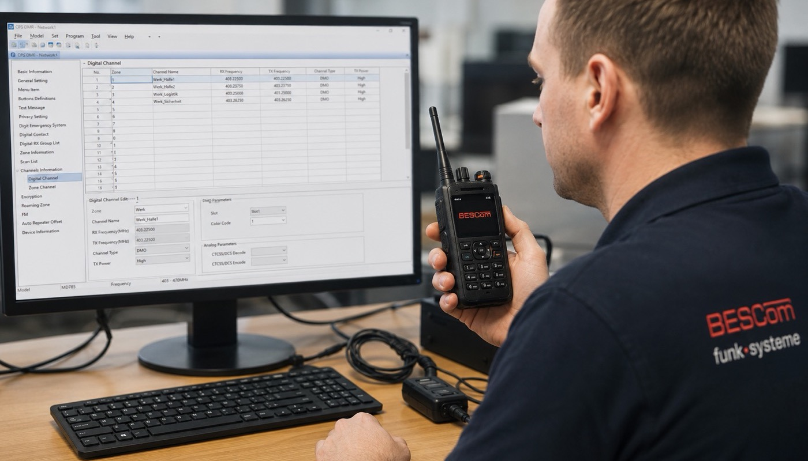

Viele Unternehmen kaufen Handfunkgeräte – und denken, damit sei die Arbeit getan. In der Praxis ist der Kauf nur der erste Schritt. Ein nicht oder falsch programmiertes Funkgerät ist nutzlos im besten Fall – und strafbar im schlechtesten.
Dieser Artikel erklärt, was bei der professionellen Programmierung eines Handfunkgeräts tatsächlich passiert, welche Rechtspflichten Betreiber haben und warum die Beauftragung eines Fachhändlers allein nicht ausreicht.

Warum ist professionelle Programmierung so wichtig?
Ein Handfunkgerät ist kein Plug-and-Play-Gerät wie ein Smartphone. Es sendet auf Frequenzen, die in Deutschland durch das Telekommunikationsgesetz (TKG) und die Zuweisungen der Bundesnetzagentur geregelt sind. Wer auf einer nicht zugewiesenen Frequenz sendet, begeht eine Ordnungswidrigkeit – und kann die Kommunikation anderer Nutzer empfindlich stören.
Darüber hinaus muss das Gerät auf die konkrete Infrastruktur abgestimmt werden: Kanalplanung, Gruppenstruktur, Sendeleistung, Verschlüsselung, Notruffunktionen – all das wird bei der Programmierung konfiguriert.
Was wird bei der Programmierung eingestellt?
1. Frequenzen und Kanäle
Die zugewiesenen Frequenzen werden hinterlegt – entsprechend der Genehmigung der BNetzA. Bei DMR-Geräten werden zusätzlich Zeitschlitze (TDMA) und Color Codes konfiguriert. Für analoge Geräte werden Frequenz, CTCSS/DCS-Töne und Rauschsperren eingestellt.
2. Gruppenstruktur und Talk Groups
Für Betriebe mit mehreren Abteilungen oder Schichten werden Gesprächsgruppen angelegt: „Lager", „Logistik", „Technik", „Alle" – jeder Kanal erreicht genau die richtigen Personen. Bei DMR können Gruppenrufe, Einzelrufe und Notrufe separat konfiguriert werden.
3. Sendeleistung
Zu viel Sendeleistung kann benachbarte Systeme stören; zu wenig führt zu Reichweitenproblemen. Die Sendeleistung wird standortspezifisch auf das Minimum eingestellt, das für zuverlässigen Betrieb ausreicht.
4. Verschlüsselung
Bei digitalen Geräten (DMR, TETRA) wird die Verschlüsselung aktiviert und der Schlüssel eingetragen. Ohne Verschlüsselung kann jeder mit einem Scanner die Gespräche mithören – ein unhaltbarer Zustand in sensiblen Betriebsumgebungen.
5. Notruffunktionen
Viele Geräte haben eine dedizierte Notruftaste. Diese muss korrekt mit der Notruffunktion des Systems verknüpft werden – damit bei einem Alarmruf die richtige Gruppe und ggf. die GPS-Position übertragen wird.
6. Gerätekennzeichnung und -management
Jedes Gerät erhält eine eindeutige Kennung (DMR-ID, ISSI bei TETRA). Das ermöglicht im Fehlerfall die genaue Identifikation des Geräts und erleichtert die Fehlerdiagnose.
Analoge vs. digitale Handfunkgeräte
| Merkmal | Analoges Gerät | Digitales DMR-Gerät |
|---|---|---|
| Übertragungsqualität | Rauschen bei schwachem Signal | Klar bis zum Abbruch |
| Verschlüsselung | Nicht möglich | Standard |
| Effizienz | 1 Gespräch pro Kanal | 2 Gespräche (TDMA) |
| GPS-Ortung | Nein | Ja (je nach Modell) |
| Datenfunk | Nein | Ja |
| Anschaffungskosten | niedriger | mittel bis hoch |
| Programmierkomplexität | gering | höher |
| Zukunftssicherheit | gering (Frequenzabkündigung) | hoch |
Regelmäßige Wartung und Gerätepflege
Handfunkgeräte in industriellen Umgebungen sind hohen Belastungen ausgesetzt: Staub, Erschütterungen, Feuchtigkeit, Temperaturschwankungen. BESCom empfiehlt:
- Jährliche Inspektion: Überprüfung der Akkus, Anschlüsse, Lautsprecher und Mikrofonmembran
- Firmware-Updates: Hersteller liefern regelmäßig Updates mit Bugfixes und neuen Funktionen
- Akkutausch: Li-Ion-Akkus verlieren nach 300–500 Ladezyklen deutlich an Kapazität. Ein schwacher Akku = kurze Einsatzzeit
- Reparatur statt Entsorgung: BESCom repariert Geräte aller Hersteller – in der Regel günstiger als ein Neukauf
Welche Hersteller empfiehlt BESCom?
BESCom ist herstellerunabhängig – wir programmieren und warten Geräte aller führenden Marken. Zu den meistgenutzten Geräten unserer Kunden gehören:
- Motorola Solutions – Professionelle Arbeitstiere, sehr langlebig, breite DMR- und TETRA-Palette
- Hytera – Sehr gutes Preis-Leistungs-Verhältnis, starke DMR-Geräte für Industrie
- Kenwood – Zuverlässig, einfach zu bedienen, gut für mittelgroße Betriebe
- Sepura – Spezialist für TETRA, häufig in BOS-nahen Umgebungen
- ICOM – Besonders robust, für Marine- und Außeneinsatz geeignet
Bei Neubeschaffungen beraten wir herstellerunabhängig – auf Basis Ihres Einsatzszenarios, Budgets und bestehender Infrastruktur.
Express-Service für dringende Fälle
Gerät ausgefallen? Notruf-Funktion nicht aktiv? BESCom bietet einen Express-Programmierservice für dringende Fälle: Gerät einschicken oder vorbeibringen – Rückgabe in der Regel innerhalb von 24 Stunden.
Für Kunden mit Wartungsvertrag ist der Express-Service inklusive.
Fazit: Programmierung ist Betriebssicherheit
Ein Handfunkgerät ist so gut wie seine Konfiguration. Falsche Frequenzen, fehlende Verschlüsselung, nicht konfigurierte Notruftasten – das sind keine Kleinigkeiten, sondern direkte Risiken für Betriebssicherheit und Compliance.
BESCom programmiert, wartet und repariert Handfunkgeräte aller Hersteller in Hamburg und Norddeutschland – mit über 35 Jahren Erfahrung und dem Wissen, das sich nur durch echte Praxis aufbaut.
Wir programmieren, warten und reparieren Geräte aller Hersteller – schnell, zuverlässig und rechtssicher.